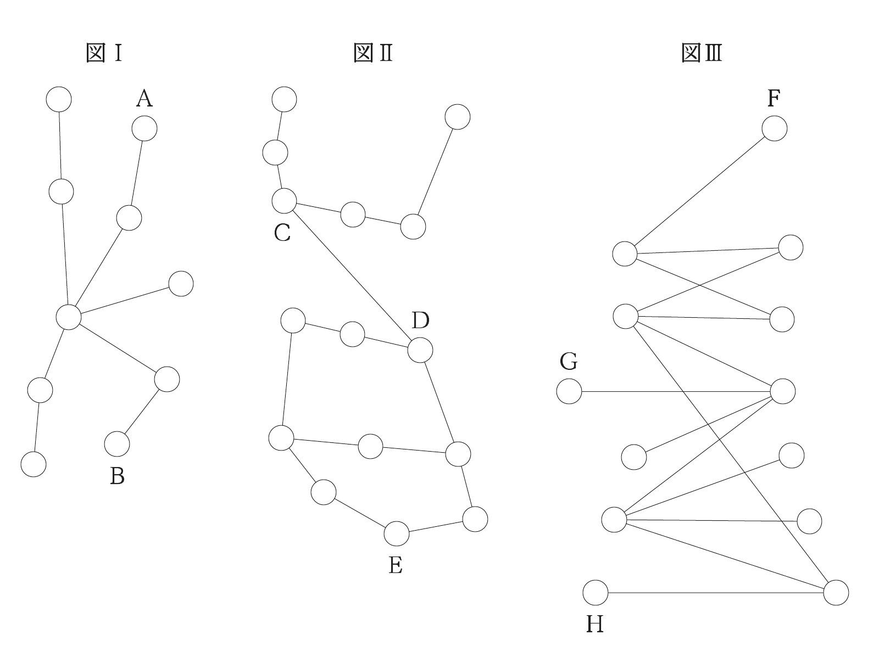
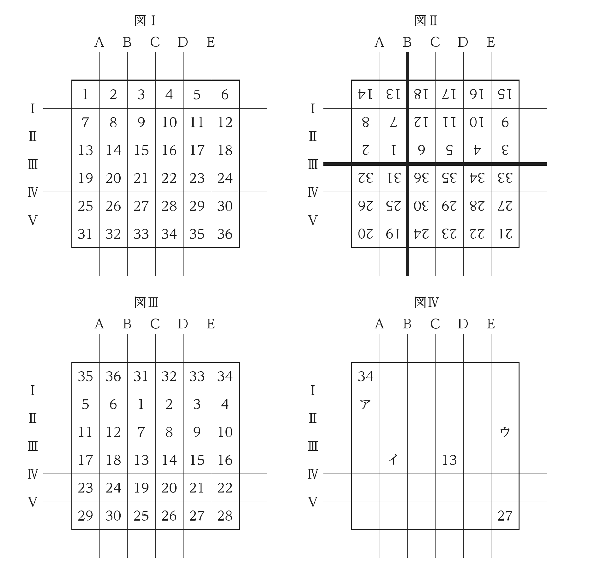
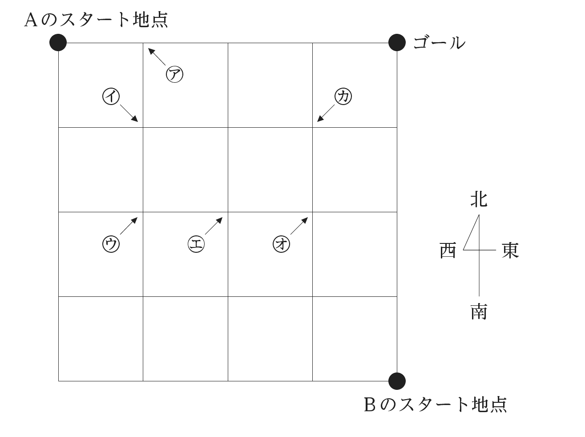
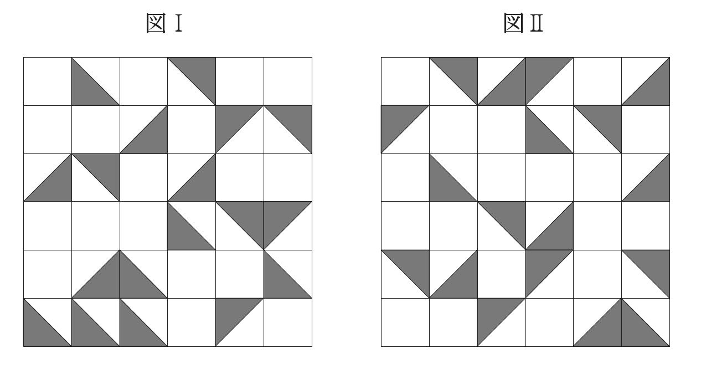
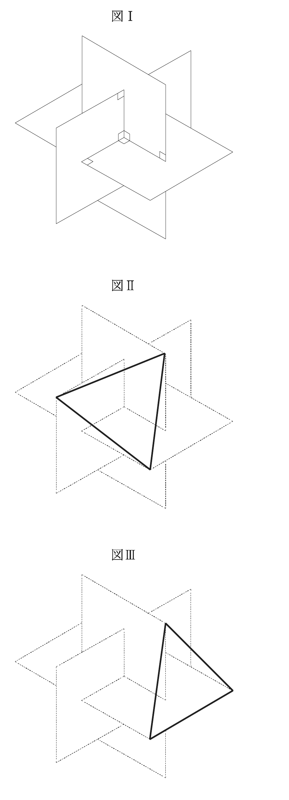
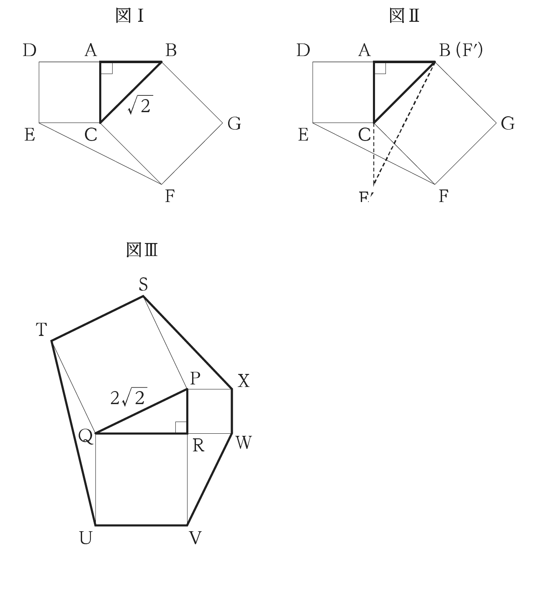
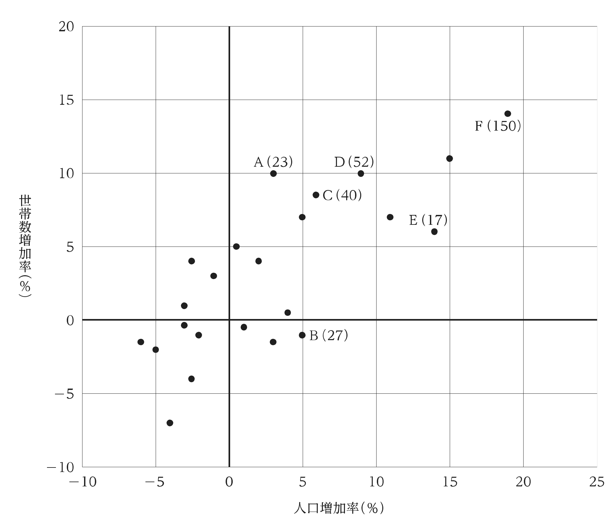
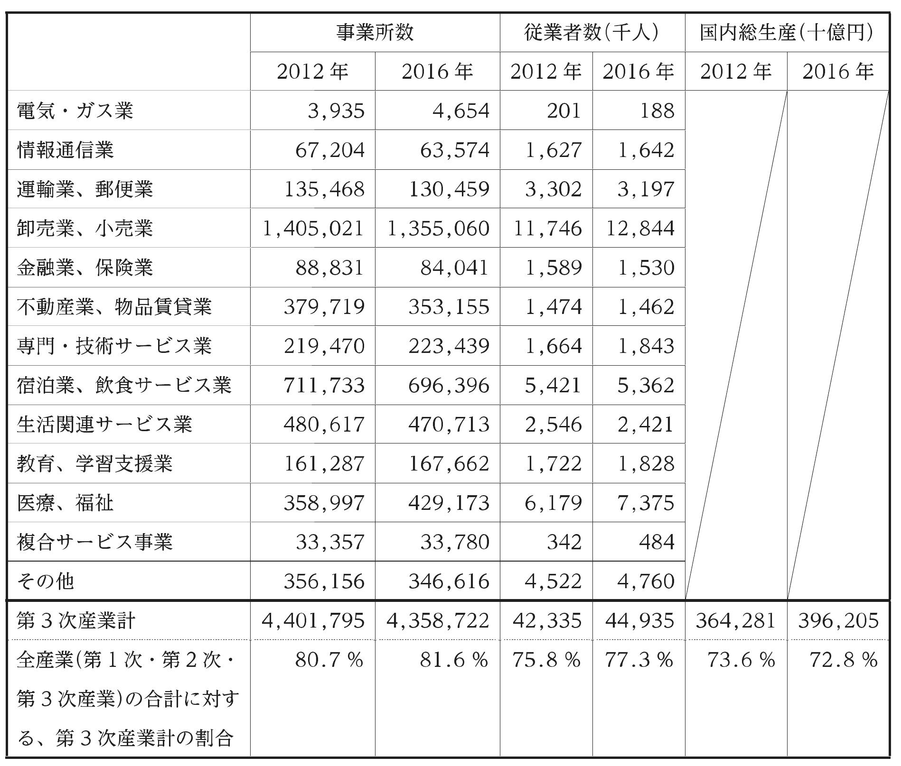

2023年度 基礎能力試験Ⅰ部 解説
原本：23I部.pdf。全24問、試験時間120分。原本PDFのページ番号は表紙を1と数える。正答番号は巻末正答表（原本PDFの35ページ。Ⅱ部原本PDFの32ページにも同一表あり）に掲載されている。
問1～8は原本で文章本文が著作権の関係により非掲載になっている。 選択肢と正答番号は読めるが、本文のどの一文が根拠なのか、誤答肢が本文とどこで食い違うのかは検証できない。これらは「公式正答の確認・選択肢の論点・学習上の補足」を示し、本文にない内容を補って解説したようには扱わない。問9～24は問題内容に即して解法を説明する。
問1｜日本的感性と触覚性〔本文非掲載〕
原本PDFの2～3ページ／公式正答：1
確認できること 正答肢は、触覚性を日本的感性の基本的な特性とし、桜を見る際に、美しい空間の中へ入り包まれる鑑賞のあり方を挙げる。「触覚性」を物へ直接手を触れるという意味だけに限らず、身体全体で空間を経験する感性として扱う選択肢である。
本文があれば確認する箇所
- 肢1： 「触覚性」の定義と、桜の鑑賞の例がその具体例になっているか。
- 肢2： 「動き」という語の定義、二方向への分化の主体と順番。「直ちに」という限定があるか。
- 肢3： 世界型の意識と、記憶の残像に向く意識が区別されていないか。
- 肢4： 西洋的認識の伝来時期と、「けしき」が忘却されたという断定が本文にあるか。
- 肢5： われ型・記憶・嗅覚の関係。特に嗅覚が他の感覚「より」強いという比較の根拠。
関連知識・解法のコツ 評論では日常語が著者独自の意味で使われる。「触覚なら手で触れるはず」という常識で正答を否定せず、本文の定義を優先する。抽象語と具体例を線で結ぶと読みやすい。
当日の注意 「中世」「直ちに」「よりも」「忘却された」のような時期・強調・比較に印を付け、本文に同じ強さの根拠があるか確認する。このPDFのみでは肢2～5の誤りの所在を断定できない。
問2｜現実主義と対立の原因〔本文非掲載〕
原本PDFの4～5ページ／公式正答：2
確認できること 肢2の要点は、国家間対立の解決が難しいため、現実主義は目前の権力闘争への対処を重視するが、それをもって対立の根本原因の解決を諦めたとはいえない、という区別である。「まず対処する」と「根本解決を放棄する」は同じ意味ではない。
選択肢の論点 肢1は国際法・国連に頼らず武力で解決するという方針、肢3は最小限の道徳を守れば各国の理念・正義を追求できるという条件、肢4は旧状復帰の原則と原因解決の委託、肢5は力・利益より理念・正義を選ぶべきという規範を述べる。それぞれ、本文がそこまで言っているかの確認が必要。公式正答が2であること以外、非掲載本文の説明を捏造して個別の誤りとしない。
関連知識・解法のコツ 国際政治における現実主義は一般に国家・権力・安全保障等を重視する考え方だが、読解問題では学説の一般知識より出題文の主張が優先される。「Aを優先する」は「Bを不要とする」を含意しない。
当日の注意 筆者の説明を選ぶ問題で、自分が望ましいと思う政策を選ばない。事実説明と「求められる」「すべき」という価値判断の付加を見分ける。
問3｜象徴とシステム〔本文非掲載〕
原本PDFの6ページ／公式正答：1
確認できること 空欄に入る公式正答は、個々の象徴を関連付けてシステムを形成するという内容。要素をそれぞれ増やすことと、要素同士の関係を組織することを区別する問題だと分かる。
選択肢の比較 肢1は象徴間の関係、肢2は象徴化した世界の外からの要素の取込み、肢3は情報から具象的概念を抽出する作用、肢4は新たな象徴能力の発達、肢5は抽象的なものを具象化する作用を述べる。空欄前後の主語・対比・言換えが非掲載のため、肢1が入る文法上・論理上の直接根拠は検証できない。
関連知識・解法のコツ 空欄補充では、まず直前直後の接続詞と指示語を確認する。「一つ一つ」から「相互に」への展開なら、能力の増加ではなく関係の構築が候補になる。これは一般的な解法であり、この欠落本文の内容を復元したものではない。
当日の注意 抽象的・具象的を取り違えない。具体例から共通性を取り出すのが抽象化、その概念を個別の例に戻すのが具体化。
問4｜夢についての英文読解〔本文非掲載〕
原本PDFの7～8ページ／公式正答：3
確認できること 正答肢は、心理療法士PerryがTwitterで夢を送るよう呼び掛け、多くの返信を得たという内容。行為者、呼び掛けの内容、結果の三点を本文で確認すべき問題である。
選択肢の照合ポイント 肢1は「19世紀まで」「他人に話すのを避けた」という歴史的一般化、肢2は色の付いた夢と疾病・治療の関係、肢4はDürerの作品の材料・色彩・風景の評価、肢5は水の夢の感情を解明し空の夢を調べているという研究内容。本文がないため、これらのどの箇所が本文と一致しないかは確定できない。
関連知識・解法のコツ 人名が多い英文は「人名→したこと→結果」の短いメモにする。夢を題材にした芸術作品と、夢の心理学的研究を同じ説明にまとめない。
当日の注意 英文のmay、can、suggestなどを、日本語選択肢が「解明した」「必ず」と強めていないか見る。本文がない状態で人物についての外部知識を正答根拠に代用しない。
問5｜脱炭素投資と石油需要〔本文非掲載〕
原本PDFの9～10ページ／公式正答：3
確認できること 肢3は、温暖化抑制にはクリーンエネルギー投資や石油生産の大幅な削減が必要で、石油需要が減少する可能性もある、という内容。「必要な取組」と「将来の可能性」の二層に分けて読む。
選択肢の照合ポイント 肢1は投資家が政治家を追及したという主体と行動、肢2は感染症流行前の業績順位、肢4はIEAの提言を受け全企業が投資中止を決めたという因果と範囲、肢5は自由市場経済を縮小すべきという政策提案。いずれも本文の根拠が必要で、選択肢だけから反証箇所を確定できない。
関連知識・解法のコツ 英文の予測、目標、提言、実際に実施された行動を区別する。「投資を止めるべきだという提言」が「投資を止めたという事実」へ変化する選択肢は要注意。
当日の注意 気候政策の常識で補わず、本文がどの主体についてどの時点の話をしているかを合わせる。
問6｜キトサン・亜鉛電池の研究〔本文非掲載〕
原本PDFの11～12ページ／公式正答：5
確認できること 肢5は、キトサンと亜鉛を利用する電池に環境上の期待がある一方、研究段階で商品化までに課題がある、という限定付きの評価である。「研究で有望」から「実用化済み」とは推論できない。
選択肢の照合ポイント 肢1は甲殻類由来物質の各用途、肢2は亜鉛の存在量と獲得競争、肢3は大小の甲殻類で行った比較実験の有無、肢4はHuとNewtonの役割・研究の進み具合、肢5は現状と課題。本文非掲載のため、研究者の役割や数値の誤りを推測して断定しない。
関連知識・解法のコツ 科学記事では「材料」「実験条件」「達成した性能」「残る課題」を区切る。ある条件で高性能であっても、量産性・寿命・コストを全部満たすとは限らない。
当日の注意 数字や著名な機関名だけで選ばない。本文に存在しない比較実験を選択肢が付け足していないか確認する。
問7｜マヤ文明の英文読解〔本文非掲載〕
原本PDFの13～14ページ／公式正答：4
確認できること 正答肢は、古典期のマヤ文明に社会・文化的なまとまりがあっても、都市国家・地域の統治者は共存と覇権争いの間を行き来した、という内容。一つの文明として論じられることと、一つの統一国家であることは異なる。
選択肢の照合ポイント 肢1は移住と先住文化の破壊、肢2はnixtamalizationの対象と目的、肢3は暦の起点・発明年・世界終末の解釈、肢4は政治的関係、肢5はHun Hunahpuの役割と創造神話。特に「暦の起点」と「暦が作られた時点」は概念上別である。ただし、本文中の具体的な記述の所在は確かめられない。
関連知識・解法のコツ 未知の文明名・専門語が出ても、本文の因果・対比・年代関係で解けるよう設計されている。固有名詞を訳せないことだけで止まらない。
当日の注意 culture、civilization、state、city-stateの範囲の違いを意識する。「同じ文明＝常に平和」という飛躍はしない。
問8｜文章整序〔本文非掲載〕
原本PDFの15ページ／公式正答：3（イ→エ→ア→ウ）
確認できること 並べ替える文章そのものが非掲載で、確認できるのは選択肢と公式の順序だけ。イ→エ、エ→ア、ア→ウをつなぐ指示語・接続詞の説明は、このPDFからは作れない。
学習方法 本文がある整序問題では、①「この・その」の指示先、②「しかし・したがって」の前提、③初出の名詞と再登場する名詞、④一般論→具体例、⑤時間順を調べる。一つのつながりが確定したら、その隣接関係を持たない選択肢を消す。
選択肢の比較 肢1はアから、肢2・3はイから、肢4・5はエから始まる。最初をイに絞れれば肢2と3の比較になり、次がウかエかを検討する。しかし、本問の本文がない以上、この絞込みを根拠付きで実行できたとは扱わない。
当日の注意 全文を頭の中だけで組み替えず、確実な二文の連結から作る。正答の並びを丸暗記しても読解練習にはならないので、本文のある年度の整序問題で手順を練習する。
問9｜回答方法を二重に問う論理
原本PDFの16ページ／正答：2
解き方 参加者を「通常／逆の操作方法」と「賛成／反対」の四種類に分ける。肢2は単なる賛否でなく、賛否を聞かれたときにAボタンを押すかを質問している。この二重化により、逆操作の人の反転が打ち消される。
| 参加者 | 直接賛否を聞くと押すボタン | 『その質問にAで答えるか』への本当の答え | 実際に押すボタン |
|---|---|---|---|
| 通常・賛成 | A | はい | A |
| 通常・反対 | B | いいえ | B |
| 逆・賛成 | B | いいえ | A |
| 逆・反対 | A | はい | B |
したがって全賛成者がAを押し、全反対者がBを押す。
他の肢 肢1は逆・賛成者がBを押すので誤り。肢3の「はいと回答するか」は賛成かどうかを言い換えただけで、逆・賛成者はB。肢4では通常・反対者が「いいえと回答する」に「はい」と答えてAを押すため、Aの全員が賛成とはいえない。肢5は逆操作の者について「通常操作をする、かつ賛成」の前半が偽なので、賛否にかかわらず質問全体が偽となる。逆・反対者もAを押してしまう。
関連知識・コツ 「PかつQ」は両方が真のときだけ真。うそつき問題と似るが、本問では回答内容を偽るのではなく、ボタンへの対応が逆である。
当日の注意 「はいと答える」と「Aボタンを押す」を同一視しない。四行の表なら長い文章を確実に処理できる。
問10｜色と入場順の対応推理
原本PDFの17ページ／正答：4
解き方 Aは1番・手袋青、4番は帽子黄・手袋赤、Dは帽子赤・手袋は赤以外。Cより後に黒帽子・灰手袋の人が少なくとも一人いる（それ以外の位置にも同じ色の人がいてよい）。この三つの手袋色は青・赤・灰で異なる。
Eと同じ手袋の人がほかに2人いるので、Eの手袋の色は3人が使う。残り2人がほかの2色を使うことになり、手袋は「3人同色＋1人＋1人」の構成。
- 3人同色を赤と仮定。 青のAと、赤手袋ではないDが残り2人になる。すると灰手袋はDだが、Dの帽子は赤なので黒帽子・灰手袋の人がいなくなり矛盾。
- 3人同色を青と仮定。 青はA・D・E、赤と灰はB・Cになる。灰手袋の人は黒帽子でCより後なのでBが灰、Cが赤で4番。BはCより後、つまり5番だが、直前のCは黄帽子・赤手袋で同色ではなく矛盾。
- よってE・D・もう1人が灰手袋。残りはAの青と4番の赤。
「Cより後にいる」という条件を満たす黒帽子・灰手袋の人はA、D、4番、CにはなれないのでBかE。Bとすると、Cより後のBは3番か5番。3番なら残りのD・Eの一方が4番となり、灰手袋に反する。5番なら直前の4番が同色でなく矛盾。したがって、この条件を満たす黒帽子・灰手袋の人はE。EはCより後で、4番でもない。3番だとBが4番となり直前Eは黒・灰で同色でないので、Eは5番。
4番がBかCかで残りを埋めると、次の2通りになる。
| 場合 | 1番 | 2番 | 3番 | 4番 | 5番 |
|---|---|---|---|---|---|
| ① | A：青帽・青手 | B：黒帽・灰手 | D：赤帽・灰手 | C：黄帽・赤手 | E：黒帽・灰手 |
| ② | A：黒帽・青手 | D：赤帽・灰手 | C：灰帽・灰手 | B：黄帽・赤手 | E：黒帽・灰手 |
どちらでもDの手袋は灰色で、直後がC。これが肢4。
他の肢 肢1は①でAと同じ帽子・手袋の人がいない。肢2はBが2番なら黒帽子で、黄帽子なら4番。肢3はCが3番なら手袋灰、4番なら赤。肢5はEが最後なので直後にBはいない。
関連知識・コツ 「Eと同じ者が2人」はEを含めて3人。「確実にいえる」は、条件を満たす全部の場合で成り立つことを意味する。
当日の注意 途中で一つ配置ができても終わらない。もう一つ可能な配置があると、見かけ上正しい選択肢が崩れる。
問11｜2色で塗れる条件と奇数周回

原本PDFの18ページ／正答：5（DGとEH）
解き方 線で結んだ隣同士を赤・青に交互に塗る。ある点から偶数本の線をたどった点は同色、奇数本なら異色になる。各図で必要な点の関係だけ調べればよい。
- 図Ⅰ：Aから中心まで2本、中心からBまで2本なので、AとBは同色。
- 図Ⅱ：CとDは隣接して異色。DからEまでは右側を通って3本なので異色。よってCとEは同色、DとEは異色。
- 図Ⅲ：GとHはどちらも左側の点のグループとなり、GとHは同色。線の交差点に○がなければ、そこは接続点ではない。
肢5でDGを結ぶとDとGは異色でなければならない。EHを結ぶとEとHも異色でなければならない。しかしGとHは同色なので、DとEは同色を要求される。もとの図ⅡでDとEは異色だから矛盾し、2色では塗れない。DGとEHの一方を接続する点に第3色を使えば解消できるので、最低3色となる。
他の肢 肢1はA＝B、C＝EなのでACとBEは同じ要求で両立。肢3もA＝B、G＝Hで両立。肢2・4は三つの元の図を木の枝のようにつなぐだけなので、接続の都度、図全体の赤青を反転すれば塗れる。
関連知識・コツ 2色で塗り分けられるグラフを二部グラフという。奇数本の辺で一周できる輪があると、最後に同じ色の隣接が生じるので2色では無理。
当日の注意 線の見かけの交差と○の頂点を区別する。全点へ色名を書かず、設問に出るA～Hの同色・異色関係だけメモすると速い。
問12｜四区画の180度回転

原本PDFの19～20ページ／正答：1（30）
解き方 上から行1～6、左から列1～6と呼ぶ。180度回転では、一つの区画の中で「上下の順」と「左右の順」が両方逆になる。例えば縦の仕切りBなら列1・2の順と列3～6の順をそれぞれ逆転する。横の仕切りⅢなら行1～3、行4～6の順をそれぞれ逆転する。
重要なのは、行の入替えと列の入替えを別々に計算できること。数字36個を毎回描き直す必要はない。
| 操作後 | 元の何行目が上から並ぶか | 元の何列目が左から並ぶか |
|---|---|---|
| 初期 | 1,2,3,4,5,6 | 1,2,3,4,5,6 |
| 1回：B・Ⅲ | 3,2,1,6,5,4 | 2,1,6,5,4,3 |
| 2回：D・Ⅳ | 6,1,2,3,4,5 | 5,6,1,2,3,4 |
| 3回：C・Ⅰ | 6,5,4,3,2,1 | 1,6,5,4,3,2 |
| 4回：E・Ⅱ | 5,6,1,2,3,4 | 3,4,5,6,1,2 |
| 5回：D・Ⅴ | 3,2,1,6,5,4 | 6,5,4,3,2,1 |
| 6回：C・Ⅳ | 6,1,2,3,4,5 | 4,5,6,1,2,3 |
最終形は次のとおり。原本の既知の34、13、27とも一致する。
34 35 36 31 32 33
4 5 6 1 2 3
10 11 12 7 8 9
16 17 18 13 14 15
22 23 24 19 20 21
28 29 30 25 26 27アは2行1列で4、イは4行2列で17、ウは3行6列で9。合計4＋17＋9＝30。33、36、39、42を選ぶ肢2～5とは一致しない。
関連知識・コツ 元のr行c列の数字は6(r－1)＋c。札の向きが上下逆になっても、札に書かれた数自体が別の数に変わるわけではない。
当日の注意 仕切りは札と一緒に動かない。毎回、現在の配置をA～E、Ⅰ～Ⅴという固定位置で区切る。
問13｜遠回りの回数から経路を確定する

原本PDFの21～22ページ／正答：3（Aはウを通った）
解き方 1区間を1単位とし、左下を(0,0)、ゴールを(4,4)とする。Aは(0,4)、Bは(4,0)から出発。どちらの最短距離も4区間。ゴールから遠ざかる移動を1回すると、取り戻すための1回も必要なので、遠回り2回なら全経路は4＋2×2＝8区間になる。
Bは曲がるのが2回だけ、つまり三つの直進部分からなる。ゴールと出発点は同じ縦線上なので、西へ進んだ後、北へ進み、東へ戻るしかない。遠回りは西向きの2区間なので、Bの道は、
西2 → 北4 → 東2
(4,0) → (2,0) → (2,4) → (4,4)と確定する。Bは出発から4区間でエ＝(2,2)へ到着し、次は北へ進む。Aも同時にエで出会い、同じ北へ進んで(2,3)に達する。
Aが出発点(0,4)からエまで使えるのは4区間で、その間の最短距離も4。したがって東2回・南2回だけを使う。エへの入り方は、北側(2,3)から南へ入るか、西側のウ＝(1,2)から東へ入るかの二つ。しかし北から来ると、エの次に北へ戻る際に同じ道路を再び通ってしまう。よってAは必ずウから入る。
他の肢 Aの前半には「南2→東2」という可能性があり、ア＝(1,4)もイ＝(1,3)も通らないので肢1・2は確実でない。Bの縦移動はx＝2、横移動は一番下・一番上の線なので、オ＝(3,2)、カ＝(3,3)は通らず、肢4・5は誤り。Aはエから北1→東2→北1と進めば、途中再会しない条件も満たす。
関連知識・コツ 格子経路の最短距離は横差＋縦差。最短から外れる移動1回につき全長は2増える。
当日の注意 「同じ交差点を通る」と「同じ時刻に出会う」は違う。また本問の禁止は同じ道路の再使用であり、図形上の条件を正確に読む。
問14｜隣接交換による整列
原本PDFの23～24ページ／正答：5
解き方 比較規則を一列に書くと、
赤1、赤1、赤2、赤2、…、赤13、赤13、黒1、黒1、…、黒13、黒13という順番へ並べる作業である。同じ色・同じ数字の2枚（例えばハート7とダイヤ7）の順は指定されない。
方法①は左から隣同士を比較し、大きい側を右へ送り続ける。1回が終わると未確定部分の最大のカードが右端に来て裏返される。方法②は逆向きに走査し、最小のカードを左端に確定させる。どちらを選んでも正しい位置を一枚ずつ確定するので、終了時は左26枚が赤、右26枚が黒。肢5が必ず成立する。
- 1：誤り。 ①は右端、②は左端を確定する。交互に25組実行すると未確定なのは26・27番。51回目の①で27番が裏返り、最後の②は26番。最後は27番ではない。
- 2：誤り。 39番は黒7の一方。スペードKは黒13なので51・52番のいずれか。
- 3：誤り。 色が異なると赤が常に左。ハートKはクラブAより左に整列する。
- 4：誤り。 ダイヤ7が途中で一番右へ移るには、右側の最後のカードと交換するか、そこに留まる必要がある。しかし最初から右端ではなく、右端へ運ぶ交換走査では未確定最大の黒カードが右へ集まる。初期位置39番より右にある13枚すべてを追い越すには、それらが全てダイヤ7より小さい必要があるが、小さいカードは赤1～6の12枚しかない。同色同数のハート7とは交換しないため、右端までは進めない。
- 5：正しい。 赤はハート13枚＋ダイヤ13枚＝26枚。
関連知識・コツ これはバブルソート型の隣接交換。動作を全部追わず、「一往復で端の何が確定するか」という不変の性質を見つける。
当日の注意 色が数字より優先される。赤13は黒1より左。スート同士の順位は規則にないので勝手に決めない。
問15｜透明板の回転・反転と重ね合わせ

原本PDFの25ページ／正答：4
解き方 各模様を6行6列のマスと考え、回転・裏返しの後に同じマスを照合する。透明板を重ねると、灰色部分はどちらか一方でも灰色なら灰色になる。二つの灰色が重なったときだけ灰色になるのではない。
肢4を作る具体的な操作は、
- 図Ⅰを左右反転してから、時計回りに90度回転する。
- 図Ⅱを左右反転してから180度回転する。これは図Ⅱを上下反転することと同じ。
- 両者の外枠をそろえて重ねる。
このとき左上は白、上段2列目は左下半分が灰色、上段3列目は上側の小三角形だけ白で残りが灰色、上段4列目は白になる。中央付近では3行3列が上側だけ白、3行4列が下側だけ白になる。全36マスの灰色の位置・向きが肢4と一致する。
他の肢の確認 回転4通りと裏返しの有無を両板について照合すると、肢1は最も近い向きでも3マス、肢2は5マス、肢3は2マス、肢5は4マスの違いが残る。例えば肢3は「図Ⅰを反時計回り90度、図Ⅱを180度」の組合せがよく似るが、4行5列と6行1列が合わない。見た目の印象で肢3を選ばないこと。
関連知識・コツ 正方形の向きは回転4通りと鏡映4通りの計8通り。回転だけでは作れない鏡映模様がある。灰色三角形の「位置」と「向き」を別々に見る。
当日の注意 最初から36マス全部を頭で追わず、角の白マス、灰色が4分の3になるマス、隣り合う特徴的なマスから候補を絞る。最後に残りのマスを確認する。
問16｜三つの長方形を覆う立体の辺

原本PDFの26ページ／正答：4（30本）
解き方 各長方形の4頂点が立体の頂点になる。三つの長方形は中心を共有するが頂点は共有しないので、頂点の数は4×3＝12個。
一つの頂点に注目すると、立体表面の辺として、①同じ長方形の短辺が1本、②ほかの二つの長方形の頂点へ向かう辺が各2本、合計5本集まる。長方形の長辺は、そのまま立体表面の辺になるのではなく内部を通る線になる点が大切。
12頂点それぞれで5本を数えると、一本の辺を両端から2回ずつ数えているので、
E=12×5/2=30.
別の数え方では、短辺が3枚×2本＝6本、異なる長方形間を結ぶ辺が12頂点×4本÷2＝24本、合計30本。よって24・26・28・32の肢は合わない。
関連知識・コツ 辺の両端で重複して数える方法は「頂点の次数の合計＝辺数×2」。この立体は三角形の面20枚を持つ二十面体型で、オイラーの公式V－E＋F＝2にも12－30＋20＝2で一致する。ただし辺の長さが全て等しい正二十面体とまでは、与えられた長方形の縦横比だけではいえない。
当日の注意 透視図の内部の線を外側の辺に加えない。短辺と長辺が異なる条件を無視して立方体等と同一視しない。
問17｜点数の組合せと重複組合せ
原本PDFの27ページ／正答：3（220通り）
解き方 国語、算数、理科、社会の得点をそれぞれx、y、z、wとする。条件はx＋y＋z＋w＝10、x≧1、ほかは0以上。国語の1点を先に確保してx′＝x－1と置くと、
x'+y+z+w=9, x',y,z,w≥0.
残った9点を、区別できる4科目に0点も認めて配る問題になる。9個の丸と3本の仕切りを並べればよい。
○○｜｜○○○｜○○○○ → x′=2、y=0、z=3、w=4計12個の位置から仕切り3本の位置を選ぶので、
C(12,3)=12×11×10/3×2×1=220.
総得点が10なので、個々の10点以下という上限は自動的に満たされる。
他の肢 286は国語0点も許したC(13,3)。そこから国語0点の66通り＝C(12,2)を引いても220となる。66は除くべき部分だけを数えた値。170、366も条件に合う全組合せ数ではない。
関連知識・コツ 非負整数nをk個の区別される箱へ配る数はC(n＋k－1,k－1)。全て1以上なら各箱に1を先に入れる。
当日の注意 科目には名前があるので、国語1・算数2と国語2・算数1は別。単純に得点の組を並べ替え不能として扱わない。
問18｜年齢条件と整数の絞込み
原本PDFの28ページ／正答：5（154歳）
解き方 2023年5月の年齢をa＞b＞c＞dとする。全員4月生まれなので、2022年5月は各人が1歳若く、2021年5月は2歳若い。
2022年の条件から、
a-1=4{(c-1)+(d-1)}, a=4c+4d-7.a≦100なので4(c＋d)≦107、整数条件からc＋d≦26。c＞dより2d＋1≦26、つまりd≦12。一方、d－2は7の倍数、d≧3なので、この範囲ではd＝9に限られる。
するとa＝4c＋29、b＝9c/4。c＞9かつc＋9≦26より10≦c≦17。bが整数だからcは4の倍数で、候補は12か16。さらにa－d＝4c＋20が12の倍数なので、c＋5は3の倍数。12は合わず、c＝16。
したがってa＝93、b＝36、c＝16、d＝9。合計は93＋36＋16＋9＝154。順序・上限・年齢差84も全条件に合う。他の合計125、137、142、149はこの唯一の組と一致しない。
関連知識・コツ 整数問題は、不等式で候補を狭め、その後に倍数・余りの条件を使う。最初から100歳まで全部試す必要はない。
当日の注意 「和の4倍」は、前年のCとDの両方を1歳引いた後で4倍する。a－1＝4(c＋d)－2ではない。
問19｜発車間隔とすれ違い
原本PDFの29ページ／正答：1（自転車：バス＝3：7）
解き方 バスの速さをv、自転車をuとし、時間の単位を分にする。9時15分にAは駅から15vの地点イにいる。9時29分にBは発車後9分なので、駅から9vの地点アにいる。したがってアとイの距離は15v－9v＝6v。
自転車Cはイからアまで9時15分～9時29分の14分で進むから、14u＝6v。よって、
u:v=6:14=3:7.
別解 9時15分時点で、同じ時刻のAとBの間隔は発車20分分の20v（Bの出発前部分も同一直線上に延長して考える）。その間隔を自転車とBが互いに近づいて14分で縮めるため、14(u＋v)＝20v。やはりu/v＝3/7。ただし初学者には駅からの距離を比べる最初の解法が分かりやすい。
他の肢 求まる比を既約比にすると3：7のみ。他の比は14分の自転車の移動距離をバス6分分にできない。
関連知識・コツ 同速度で出発時刻が違う二台は、同時刻の車間距離が「速さ×発車間隔」で一定。向かい合う相対速度は速度の和。
当日の注意 イとアで会うバスは別の車。9時15分と9時29分の差14分だけをバスの走行時間差と誤認しない。9時10分にウ出発という情報は比を求めるのに必須ではない。
問20｜正方形を外付けした図形の面積

原本PDFの30ページ／正答：2（ア＝4、イ＝22）
前半の解き方 直角二等辺三角形ABCの斜辺は√2なので、他の2辺は1。三角形ABCは面積1/2、正方形ACEDは1、正方形BCFGは2。
残る三角形CEFは、Cを中心に90度回すとCFがCBに重なり、CEはCAの反対方向の延長線上に来る。回転後の底辺CE′は1、Bからその直線までの高さも1なので面積1/2。五角形全体は、
1/2+1+1/2+2=4.
したがってア＝4で、肢4・5を除外する。
後半の解き方 直角三角形PQRの直角を挟む2辺をa、b、斜辺をcとする。c＝2√2だからc²＝8。三平方の定理よりa²＋b²＝8。外付けした三つの正方形の面積の合計は、
a^2+b^2+c^2=8+8=16.
正方形の間の三つの隙間は、それぞれ元の三角形と同じ面積になる。例えば直角頂点Rの外側の三角形RVWは直角を挟む辺がa、bで、面積ab/2。ほかの頂点の隙間も、片方の辺を90度回して元の辺へ重ねると、元の三角形と同じ底辺・高さが得られる。元の三角形の面積が3/2なので、元の三角形1枚＋隙間3枚で面積は4×3/2＝6。
よって六角形の面積は16＋6＝22。ア＝4かつイ＝22の肢2が正しい。イ＝20、20＋2√2ではない。
関連知識・コツ 直角三角形の各辺に正方形を外付けしたこの形の外周六角形は、面積「2×斜辺²＋4×元の三角形の面積」で計算できる。公式を暗記するより、正方形3枚と三角形4枚に分ける理由を理解する。
当日の注意 外付け正方形の面積を辺の長さの和で計算しない。第二図のa、bを個別に求めなくてもa²＋b²とabが分かれば足りる。
問21｜人数の移動を逆算する
原本PDFの31ページ／正答：4（130人）
解き方 勝者は自分と同数を敗者2チームから受け取るため、人数が3倍になる。最後にCは30人なので、3試合目前のCは10人。
初期Aをx、Bをy、Cを250とすると、1試合目はAが勝つので、終了時は、
(A,B,C)=(3x,y-x,250-x).
2試合目の勝者を場合分けする。
- Cが勝つ場合： 2試合目終了時Cが10人なので、その直前が10/3人になり不可能。
- Aが勝つ場合： 2試合目終了時C＝250－x－3x＝250－4x＝10。x＝60となり、初期Aが100人以上という条件に反する。
- よってBが勝つ。 Cは250－x－(y－x)＝250－y＝10になるので、y＝240。
2試合目終了時はA＝3x－(240－x)＝4x－240、B＝3(240－x)＝720－3x、C＝10。最後はAもBも10人ずつ減るから、最終時点のB－A＝50という差は2試合目終了時にも等しい。
(720-3x)-(4x-240)=50, 960-7x=50, x=130.
検算
| 時点 | A | B | C |
|---|---|---|---|
| 開始 | 130 | 240 | 250 |
| A勝利後 | 390 | 110 | 120 |
| B勝利後 | 280 | 330 | 10 |
| C勝利後 | 270 | 320 | 30 |
どの試合でも敗者は移動前に勝者より人数が多く、総人数620も保存される。よって100・110・120・140人の肢は除外できる。
関連知識・コツ 逆算では「勝者が3倍」を最初に使う。両方のチームから同じ人数が減れば、その二チームの差は変わらない。
当日の注意 勝者の「試合後の人数」と同数を移すのではない。移動前の人数が基準。
問22｜文字列の編集距離
原本PDFの32ページ／正答：2（8回）
8回でできることの確認 AをBへ変えるとき、次の対応で位置をそろえる。―は挿入・削除の位置で、元の文字列に含まれる記号ではない。
A：― す が も こ ま ご ― め い け ぶ く ろ
B：お や が も ― ま ご が も い け で と ぶ「お」の挿入、「す→や」、こを削除、「が」の挿入、「め→も」、末尾の「ぶ→で」「く→と」「ろ→ぶ」で計8回。したがって9・10・11回という肢3～5は最小ではない。
7回以下でできないことの確認 可能な変え方を全て頭で列挙する代わりに、短い接頭部分から最小回数を表にする。D(i,j)を「Aの先頭i文字をBの先頭j文字へ直す最小回数」とする。最後の操作は次のいずれか。
- Aの末尾1字を削除：D(i－1,j)＋1。
- Bの末尾に当たる1字を挿入：D(i,j－1)＋1。
- 両末尾を対応：同じ字ならD(i－1,j－1)、違う字ならそれに1を加える。
この三つの最小を取れば、見落とす操作はない。空文字からj文字はj回なので、上端と左端を0,1,2,…で初期化する。計算表は以下のとおり（行はAの各文字まで、列はBの各文字まで）。
空 お や が も ま ご が も い け で と ぶ
空 0 1 2 3 4 5 6 7 8 9 10 11 12 13
す 1 1 2 3 4 5 6 7 8 9 10 11 12 13
が 2 2 2 2 3 4 5 6 7 8 9 10 11 12
も 3 3 3 3 2 3 4 5 6 7 8 9 10 11
こ 4 4 4 4 3 3 4 5 6 7 8 9 10 11
ま 5 5 5 5 4 3 4 5 6 7 8 9 10 11
ご 6 6 6 6 5 4 3 4 5 6 7 8 9 10
め 7 7 7 7 6 5 4 4 5 6 7 8 9 10
い 8 8 8 8 7 6 5 5 5 5 6 7 8 9
け 9 9 9 9 8 7 6 6 6 6 5 6 7 8
ぶ 10 10 10 10 9 8 7 7 7 7 6 6 7 7
く 11 11 11 11 10 9 8 8 8 8 7 7 7 8
ろ 12 12 12 12 11 10 9 9 9 9 8 8 8 8右下は8なので、7回の肢1も不可能。両方の文字列を変更して同じ中間文字列にする方式でも最小値は変わらない。Bから中間へ行う操作を逆順にたどれば、中間からBへの同じ回数の操作になり、A→中間→Bという経路にまとめられるからである。
関連知識・コツ この値はレーベンシュタイン距離。目立つ共通部分「がも」「まご」「いけ」を先にそろえると、8回の具体例は見つけやすい。
当日の注意 「8回でできた」だけでは最小の証明にならない。置換1回を削除＋挿入の2回と数えない。一方、文字の並べ替えは許可されていない。
問23｜人口・世帯数の散布図

原本PDFの33ページ／正答：5
解き方 1世帯当たり人数は「人口÷世帯数」。人口増加率をp、世帯数増加率をhとすると、その比の変化は、
1+p/1+h.
したがってp＜hなら1世帯当たり人数が減り、p＞hなら増える。Dは人口約9％増・世帯約10％増でp＜h。Eは人口約14％増・世帯約6％増でp＞h。よってDは減少、Eは増加とする肢5が正しい。2020年の人口そのものは、この判断に使わなくてよい。
他の肢
- 1：誤り。 Aの2020年人口は23万人（233万人ではない）、増加率3％だから2015年は23/1.03≒22.3万人。Bは27/1.05≒25.7万人なのでBの方が多い。
- 2：誤り。 2015年人口はFが150/1.19≒126万人、Dが52/1.09≒47.7万人、Cが40/1.06≒37.7万人。2番目はD。
- 3：誤り。 第1象限でh＜p/2となる点を数える。およそ(4,0.5)とEの(14,6)の2地域で、3地域ではない。
- 4：誤り。 第3象限で|h|＞|p|、つまりh＜pとなる点はおよそ(－4,－7)、(－2.5,－4)の2地域。4地域ではない。
- 5：正しい。 第1象限で直線h＝pの上か下かを見るだけで判断できる。
関連知識・コツ 基準年の量＝比較年の量÷(1＋増加率)。増加率は3％なら0.03として使う。散布図にh＝pやh＝p/2を補助線として想像すると数えやすい。
当日の注意 負の増加率で絶対値を比較すると、不等号の向きに注意。図のAの人口は23万人であり、増加率の絶対値と混同しない。
問24｜産業統計の割合と全体量

原本PDFの34ページ／正答：4
解き方 全産業の値が直接書かれていなくても、第三次産業の値と全体に対する割合があれば、
全産業=第三次産業/第三次産業の割合
で復元できる。事業所数は2016年の第三次産業の数が減り（4,401,795→4,358,722）、割合は上がる（80.7→81.6％）。分子減・分母増なので全産業の事業所数は確実に減少。
従業者数は増加率を比べる。第三次産業は44,935/42,335≒1.0614倍、構成比は77.3/75.8≒1.0198倍なので、全体は1.0614/1.0198≒1.0408倍、約4.1％増。これで肢4が正しい。
他の肢
- 1：誤り。 2012年事業所数上位3業種は卸売・小売、宿泊・飲食、生活関連で合計2,597,371、第三次計の約59.0％。従業者数上位3業種は卸売・小売、医療・福祉、宿泊・飲食で合計23,346千人、約55.1％。ともに6割以下。
- 2：誤り。 医療・福祉の従業者増加率は7,375/6,179－1≒19.4％。複合サービスは484/342－1≒41.5％で、より大きい。
- 3：誤り。 「その他」も従業者が4,522→4,760と増え、事業所が356,156→346,616と減るので、1事業所当たり従業者は増加する。複合サービスのみではない。
- 4：正しい。 全体を推定する分母は割合であり、構成比の上昇だけから全体増加とはいえない。
- 5：誤り。 全産業GDPの比は(396,205/364,281)×(73.6/72.8)≒1.0995。約10％増で、5％減ではない。
関連知識・コツ 部分の実数、全体に占める割合、全体の実数を三角関係で整理する。「1事業所当たり」は従業者÷事業所数なので、両者の増減方向だけで判定できる場合がある。
当日の注意 ％をそのまま割っても倍率の比較では単位が打ち消し合う。全産業の実数を求めるときは0.807など小数に直す。表に丸め誤差の注があるが、本問の判定に必要な差は丸め誤差より十分大きい。
正答一覧と受験への使い方
| 問 | 1 | 2 | 3 | 4 | 5 | 6 | 7 | 8 | 9 | 10 | 11 | 12 |
|---|---|---|---|---|---|---|---|---|---|---|---|---|
| 正答 | 1 | 2 | 1 | 3 | 3 | 5 | 4 | 3 | 2 | 4 | 5 | 1 |
| 問 | 13 | 14 | 15 | 16 | 17 | 18 | 19 | 20 | 21 | 22 | 23 | 24 |
|---|---|---|---|---|---|---|---|---|---|---|---|---|
| 正答 | 3 | 5 | 4 | 4 | 3 | 5 | 1 | 2 | 4 | 2 | 5 | 4 |
120分で24問なので単純平均は5分。ただし全部の問に5分ずつ使う必要はない。問17・19や、方針が見える資料解釈は先に処理し、対応推理・図形・編集距離など時間が伸びやすいものに余裕を残す。復習では答えの番号ではなく、「何を表にしたか」「どの量が不変か」「どの条件で候補が減ったか」を一行で説明できるようにする。
問1～8は本文がないため、これらを含む本PDFの通し演習時間を、そのまま実力の指標にしない。本文が揃った教材で読解時間を別途測るとよい。